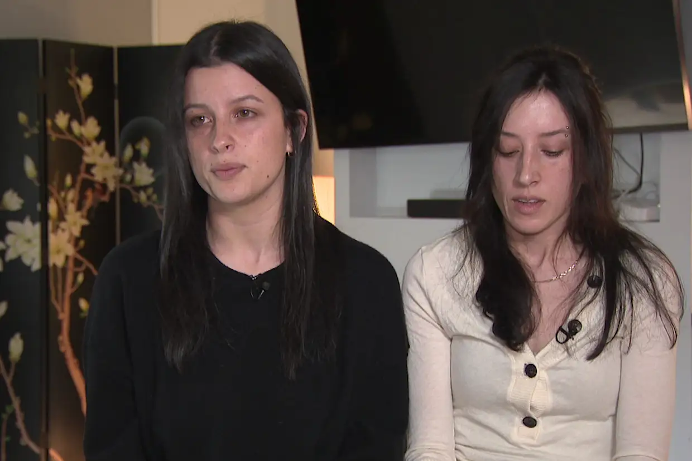

On June 20, 2026, Sally Grace Contarino walked out of a Las Vegas grocery store carrying water and snacks, told a friend she was heading to Lone Mountain for a hike, and was never seen again. She was 26 years old, Melbourne-born, an experienced solo traveller with a deep and documented love of the Nevada desert. Her evening flight home to Australia departed without her.
What followed — the family's realisation, the missing persons report filed across two hemispheres, the sniffer dogs at Lone Mountain — is a story that deserved to be heard widely and immediately. Instead, it became a story about how that information was buried.
This piece covers both: what we know about Sally's disappearance, and what happened when Earthling Official tried to tell people about it.
Last Known Description
Sally Grace Contarino, 26. Brown eyes, brown hair, approximately 5'5", 130 lbs. Last seen wearing a gray/blue sweatshirt, jean shorts, black and white shoes, carrying a purse. Last seen: Lone Mountain, Las Vegas, Nevada — June 20, 2026, approximately 1pm local time.
The Disappearance
US Immigration confirmed Sally did not board any international or domestic flight on her scheduled departure date. Sniffer dogs from Las Vegas Metropolitan Police Department traced her scent to Lone Mountain — a 2,222-foot desert peak approximately 25 miles from Harry Reid International Airport. She had checked out of the Bungalows Hostel that morning, leaving her luggage with staff, presumably intending to collect it after the hike.
Her family in Melbourne noticed something was wrong before most missing persons cases are even reported. Sally's sister Amy was sleeping at sibling Lauren's house when the messages stopped delivering. Their father had heard nothing. By the morning of June 22, the family had filed a missing persons report in Melbourne. The case reached Interpol and Las Vegas Metro Police rapidly.
In early July, authorities classified Sally as an endangered missing adult — stating investigators believe she may be experiencing severe emotional distress and could require medical attention.

Who Is Sally?
Amy Contarino, speaking exclusively to The US Sun on July 24, 2026, described her sister in terms that cut through the bureaucracy of missing persons language: resilient, passionate, fearless.
"She loves solo traveling. She loves meeting new people. She loves hiking, mostly about nature."
Amy Contarino, speaking to The US Sun, July 24, 2026Sally had made several solo trips to Nevada over the preceding three to four years. Las Vegas, for her, was not the Strip. It was not the casinos, not the nightlife, not any of the things the city sells itself on. It was the desert. The trails. The silence of the Mojave.
"Her favourite thing about Nevada is the desert. Not so much the partying reason that most people travel to Vegas. For her, it's all about the desert and nature and hiking."
Amy ContarinoVideo Report · The US Sun
Haunting timeline before tourist vanished in Las Vegas — heartbroken sister confirms creepy last footage
The US Sun reports on the haunting timeline before Australian tourist Sally Contarino, 26, vanished in Las Vegas. Her sister Amy confirms the identity of the woman in footage captured days before the disappearance.
Watch on The US SunVideo Report · Nine News Australia
Sally Contarino missing: Sisters speak after tourist's disappearance in Las Vegas — Exclusive
Nine News Australia speaks exclusively with Sally's sisters, who say someone knows something and are appealing directly to the public for information about what happened on June 20.
Watch on Nine NewsThe Ray-Ban Footage
A video circulated on social media in the weeks following Sally's disappearance. It was filmed on Ray-Ban Meta smart glasses and shows an unidentified man approaching her outside a 7-Eleven convenience store, complimenting her appearance, asking for her number. Sally told him she had a boyfriend. He returned to his vehicle. The video ended.
The footage was recorded approximately three to four days before Sally's disappearance. Amy Contarino confirmed the woman in the footage is her sister.
"It's definitely my sister. It's definitely Sally in that video. It's bizarre that she was filmed like that on this same trip that she's now disappeared on."
Amy ContarinoThe man who filmed the video has since shared it with law enforcement. He is not accused of any wrongdoing. Amy said she does not believe the footage is directly connected to Sally's disappearance — describing it as likely coincidental — and noted it was not the first time Sally had been filmed by a stranger in a similar way.
The Reddit Suppression
⚠ Documented & Verified — Screenshots Published
What happened to Sally Contarino's case on Reddit is not speculation. It is documented, witnessed, and deeply troubling.
When Earthling Official first attempted to share information about Sally's disappearance on Reddit, posts were immediately targeted by malicious reports. Within hours, the coordinated reporting campaign achieved its goal — the account was suspended and banned entirely. Not warned. Not throttled. Erased. The domain earthlingofficial.com was simultaneously blacklisted on Reddit, meaning any post containing the link was automatically killed.
Screenshots of every step of this process are published at the link below: the advance messages to moderators, the community pile-on, the deletion notice, and the moderator publicly sharing private correspondence after ignoring it.
Full Reddit Suppression Report — with Screenshots →A new account was created. A post was made in the dedicated missing persons subreddit, using a Channel 9 news article as the required link — since the Earthling Official domain had been blacklisted — and directing readers to search for the full information hub. The moderators were contacted in advance. No response came.
The post gained over 100 upvotes and thousands of views. Community members engaged. Information was being shared. But a faction of users became dismissive and hostile, some swearing directly at the poster. The context was explained repeatedly and patiently. Multiple other community members noted it was completely obvious what the post was about.
"I don't know why people are giving you a hard time," one user wrote. "It's obvious."
The moderators said nothing about the hostility. They did nothing about the users who swore. Instead, they tone-policed the poster — and then locked and deleted the entire thread. Over 100 likes. Thousands of views. Gone.
When Earthling Official followed up with a private message to the moderators — with justifiable frustration after everything that had unfolded — the moderator publicly posted that private message in the subreddit. A friend of the moderator commented: "Should've messaged in advance."
Earthling Official had messaged in advance. Twice. Both messages had been ignored.
When Earthling Official later reported publicly on the Reddit suppression, members of missing persons communities came forward independently to confirm they had experienced similar treatment. Posts removed. Threads locked. Engagement vanished.
Reddit's handling of missing persons content is a serious and ongoing concern. For Sally Contarino, every deleted post is a lead not followed. Every locked thread is a witness who never came forward.
Coming tomorrow: The full Reddit suppression evidence — screenshots, timestamps, and moderator correspondence — will be published at earthlingofficial.com/reddit-missing-persons-suppression.html. The screenshots don't lie. The timestamps don't lie. And this page isn't going anywhere.
Dean Withers & Cross-Platform Reach
Earthling Official is an Australian vegan advocacy platform and independent media outlet. It produces a satirical documentary series — TikTok WildLIVE — which observes and engages with live-streamers in their natural habitat. The platform is best known for its documented debate series with American live-streamer Dean Withers, a broadcaster with tens of thousands of regular viewers.
The Australian connection brought Sally's case into focus. Earthling Official raised her disappearance directly with Dean Withers during a live stream, reasoning that an American broadcaster with a large domestic audience could meaningfully amplify awareness of a missing Australian in the United States. Withers looked Sally up during the stream, acknowledged the case, and told his viewers to keep an eye out and report any information to police.
In a subsequent appearance, Earthling Official returned to update Dean's audience, directing viewers to earthlingofficial.com/find-sally-contarino.html. Withers declined to directly promote the site but stated: "I think what you're doing is very good. I hope she's found."
It is a rare moment of cross-platform cooperation on a missing persons case — and a demonstration of what independent media can do when it chooses to act.
What You Can Do
Sally Contarino remains missing. Her family is in Australia, thousands of kilometres from where she was last seen, relying on strangers to be their eyes and ears.
If you have any information — no matter how small — contact Las Vegas Metro Police directly. Share this page. Share earthlingofficial.com/find-sally-contarino.html. Keep her name in circulation. That is all her family is asking.
The desert does not give up its secrets easily. But people do — when enough other people are paying attention.